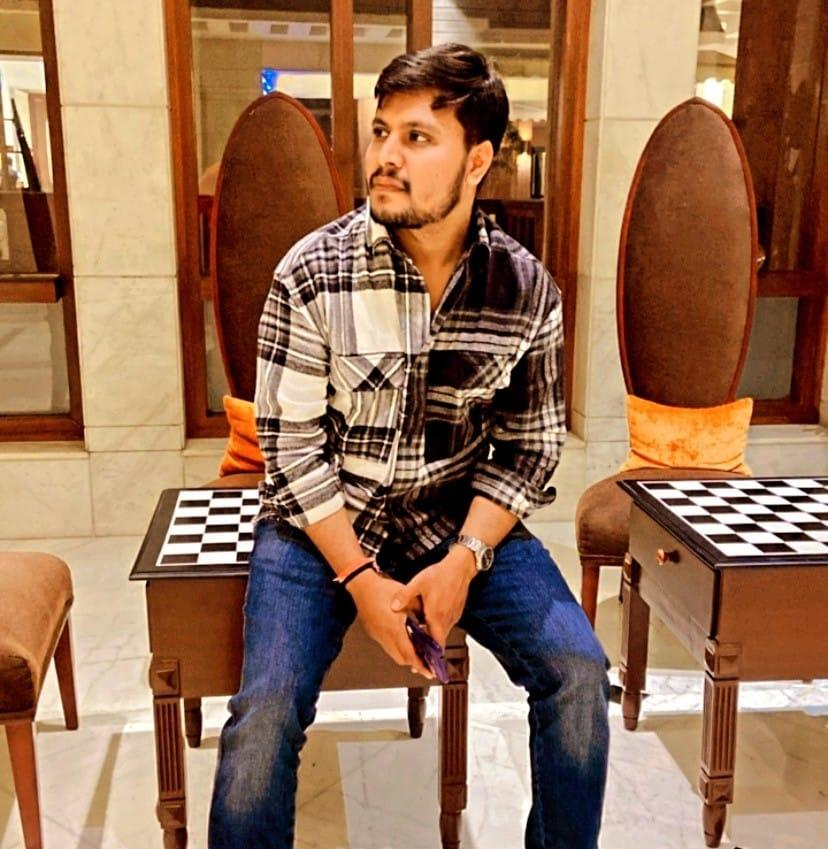

Hello, I'm
Tanay
A Web Developer


I am Tanay Yadav, an experienced web developer, and it is my professional aspiration to apply my technical proficiency and creative expertise towards the development of innovative solutions. I am keenly interested in collaborative opportunities with diverse professionals within a challenging work environment.
Masters in Computer Science
Bachelor of Technology in Computer Science and Engineering
Enhanced the capabilities of web applications, including Esther’s Project and DBCANNJ, by optimizing functionalities and ensuring full adherence to JAWS screen reader accessibility compliance standards.
Spearheaded key projects, including CITI Credit Card Services, Costco, Visa and MasterCard, CITI Flex loan services and rewards, PEGA Solutions, and Royal Bank of Scotland Credit Card Services.Designed and implemented modules that replaced third-party tools, achieving cost savings of $15,000. Effectively managed production disruptions and received dual recognition for exemplary contributions.
Elevated the development of the Visitor Management Portal for AICTE, transforming the system from manual to digital for the organization's board using BOOTSTRAP, JavaScript, PHP, and MySQL.Revamped the AICTE e-governance portal and organizational website, optimizing code to eliminate redundancy and enhance time efficiency.
| Technologies | Platforms | Framework |
|---|---|---|
| JAVA | VS code | Bootstap |
| Python | GITHUB | jQuery |
| COBOL | IBM rdz | React |
| Javascript | CICS | Express |
| Node | JIRA | Drupal |